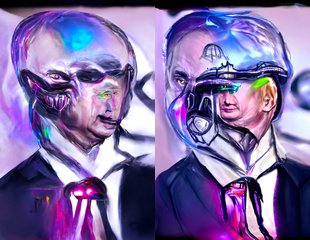

← Async Art — living works · all collections
by Mad Monk · Async Art Master #5708 · day/night · time rule: UTC
Updates twice a day to reflect day / night cycles.

Day 06:00–18:59 · Night 19:00–05:59 (UTC)
The full-size files live on IPFS; each is linked on three public gateways, in the order to try them (gateway.pinata.cloud, ipfs.io, dweb.link). Every line says what our own check found: 3 we keep this file pinned, 1 our own copy, pinned here and verified on upload.
QmWJyFbqGs8YLf… gateway.pinata.cloud · ipfs.io · dweb.link — we keep this file pinned, checked 2026-09-23 09:13QmbpNHSK2mAQaF… gateway.pinata.cloud · ipfs.io · dweb.link — we keep this file pinned, checked 2026-09-23 09:13bafybeiclxi3kq… gateway.pinata.cloud · ipfs.io · dweb.link — our own copy, pinned here and verified on upload, checked 2026-09-22QmXoDidZ9898sc… gateway.pinata.cloud · ipfs.io · dweb.link — we keep this file pinned, checked 2026-09-23 09:13QmWJyFbqGs8YLf… gateway.pinata.cloud · ipfs.io · dweb.link — we keep this file pinned, checked 2026-09-23 09:13QmWJyFbqGs8YLf… gateway.pinata.cloud · ipfs.io · dweb.link — we keep this file pinned, checked 2026-09-23 09:13QmbpNHSK2mAQaF… gateway.pinata.cloud · ipfs.io · dweb.link — we keep this file pinned, checked 2026-09-23 09:13Andrew, Is That Really You? is the bloated alien head of Andrew after being bombarded with the chaos of 2022. 1/1 on Async Art, 2022 as to be expected by Mad Monk
async.art · OpenSea · Etherscan
Generated archive pages. Content identifiers point to the public IPFS network.